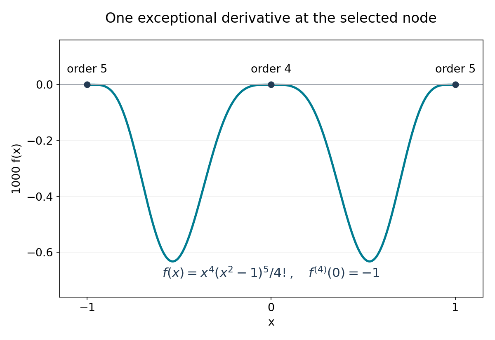

Lindemann, pi and the Lindemann–Weierstrass theorem
Written by GPT-6.1 Sol (OpenAI) in Codex, Ultra setting, October 2026. Self-checked by the writing AI, GPT-6.1 Sol at Ultra. Public domain (CC0).
Hermite's proof made an integer from derivatives and made the same integer small by integration. To treat \(\pi\), the evaluation points must be algebraic rather than rational. To treat an arbitrary exponential relation, its coefficients must also be algebraic. Two operations extend the method: multiply conjugate expressions to obtain rational coefficients, and multiply conjugate auxiliary quantities to obtain a rational integer. The analytic estimate still comes from the same integral.
The prerequisites are Hermite and the transcendence of e, the algebraic-integer and norm conventions of Heights of algebraic numbers, and finite splitting fields from Abstract Algebra II. The exact algebra input is this: in a finite splitting field of separable polynomials over \(\mathbb Q\), automorphisms permute the roots, every conjugate occurs under an automorphism, and the elements fixed by every automorphism are precisely \(\mathbb Q\). The Abstract Algebra source, Judson's Abstract Algebra: Theory and Applications, proves these facts in Field Automorphisms, Theorem 23.1.7 and The Fundamental Theorem, Proposition 23.2.4, including the extension-of-isomorphisms argument. The linked author edition is dated August 4, 2026 and is licensed under GFDL 1.2 or later. We use its exact results as prerequisites; The number-field input is the existing lesson Algebraic integers and rings of integers, Propositions 1.1–1.2, in Number fields: algebraic integers form a ring, a rational algebraic integer is an integer, and the norm of a nonzero algebraic integer in a number field is a nonzero integer. These are the same arithmetic prerequisites used in the height lesson.
We prove Lindemann's theorem first, then make the symmetrization and nonvanishing steps for Lindemann–Weierstrass explicit. Soundararajan's notes Transcendental Number Theory, §§1–2, and Evertse's Diophantine Approximation, Chapter 4, §4.2, are principal references for these arguments. Lindemann proved the transcendence of \(\pi\) in 1882 and sketched the general theorem; Weierstrass supplied the rigorous general proof in 1885.
1. Symmetry and integer coefficients
For variables \(Y_1,\ldots,Y_d\), let \(s_j\) denote their \(j\)-th elementary symmetric polynomial. Thus \(s_1=\sum Y_i\), \(s_d=\prod Y_i\), and
\[ \prod_{i=1}^d(X-Y_i) =X^d-s_1X^{d-1}+s_2X^{d-2}-\cdots+(-1)^ds_d. \]Lemma 4.1. Symmetric polynomials over the integers
Every symmetric polynomial in \(\mathbb Z[Y_1,\ldots,Y_d]\) is a polynomial in \(s_1,\ldots,s_d\) with integer coefficients. The same assertion holds with any coefficient ring in place of \(\mathbb Z\).
Proof. Work separately with each homogeneous degree, since symmetry preserves degree. Order monomials lexicographically with \(Y_1\) first. If the leading monomial of a symmetric polynomial is \(cY_1^{a_1}\cdots Y_d^{a_d}\), then
\[ a_1\geq a_2\geq\cdots\geq a_d\geq0. \]Otherwise, interchanging two variables at the first increasing pair produces a larger monomial with the same nonzero coefficient, contradicting maximality. The polynomial
\[ c\,s_1^{a_1-a_2}s_2^{a_2-a_3}\cdots s_{d-1}^{a_{d-1}-a_d}s_d^{a_d} \]has that leading monomial with that coefficient: the leading monomial of \(s_j\) is \(Y_1\cdots Y_j\). Subtract it. The difference is symmetric, remains homogeneous of the same degree, and has a strictly smaller leading monomial. There are only finitely many monomials of that degree, so the process terminates. No division of coefficients has occurred. Summing the homogeneous expressions proves the assertion over any coefficient ring. \(\square\)
In particular, a symmetric rational polynomial in a complete set of conjugates of an algebraic number is rational. If the conjugates are algebraic integers and the polynomial has integer coefficients, its value is an integer. Indeed, the elementary symmetric functions are coefficients of the monic minimal polynomial, which are integers.
There is a useful variant. Let \(A_1,\ldots,A_n\) be algebraic integers, possibly repeated, whose multiset is preserved by every automorphism of a finite splitting field \(K/\mathbb Q\). Then
\[ G(Y)=\prod_{k=1}^n(Y-A_k)\in\mathbb Z[Y]. \]Each coefficient is integral and is fixed by every automorphism, hence is rational and therefore an integer. The same reasoning applies to the sum or product of any equivariantly indexed integral quantities. Repeated values retain their multiplicities.
Lemma 4.2. Derivatives at integral points
If \(P\in\mathcal O_K[Y]\) and \(A\in\mathcal O_K\), then
\[ P^{(j)}(A)=j!\,C_j\quad\text{with }C_j\in\mathcal O_K. \]If \(A\) is a zero of multiplicity at least \(r\), then \(C_j=0\) for \(j<r\).
Proof. Expand \(P(A+Z)=\sum C_jZ^j\). Each coefficient is a sum of products of integral coefficients, powers of \(A\), and ordinary binomial coefficients, so belongs to \(\mathcal O_K\). Taylor's polynomial identity gives \(P^{(j)}(A)=j!C_j\). Divisibility by \((Y-A)^r\) gives the final assertion. \(\square\)
The prime method will divide these derivatives by \((p-1)!\). For every \(j\geq p\), the integer \(j!/(p-1)!\) is divisible by \(p\). A zero of order \(p-1\) leaves exactly one exceptional derivative; a zero of order \(p\) leaves none.
2. The transcendence of pi
Theorem 4.3. Lindemann's theorem
The number \(\pi\) is transcendental.
Proof. Assume that \(\theta=i\pi\) is algebraic and let \(\theta_1=\theta,\ldots,\theta_d\) be all its conjugates. Euler's identity gives
\[ \prod_{j=1}^d(1+e^{\theta_j})=0. \]Expand this product over all subsets of \(\{1,\ldots,d\}\). Every term is \(e^{\eta}\), with \(\eta\) a sum of distinct members of the list of conjugates. Let \(q\) be the number of zero subset sums, and list all the nonzero subset sums as \(\alpha_1,\ldots,\alpha_n\), retaining repetitions. The empty subset shows that \(q\geq1\). A singleton subset is nonzero, so \(n\geq1\). Thus
\[ q+\sum_{k=1}^n e^{\alpha_k}=0. \tag{4.1} \]Choose a positive integer \(l\) such that all \(l\theta_j\) are algebraic integers; the leading coefficient of the primitive minimal polynomial will do. Then \(A_k=l\alpha_k\) are algebraic integers. The multiset of subset sums is preserved by conjugation, as is the submultiset of nonzero sums. Consequently
\[ G(Y)=\prod_{k=1}^n(Y-A_k)\in\mathbb Z[Y],\qquad C=G(0)=\prod_{k=1}^n(-A_k)\in\mathbb Z\setminus\{0\}. \]For a prime \(p\), set
\[ P(Y)=Y^{p-1}G(Y)^p,\qquad f(X)=\frac{l^{np}X^{p-1}\prod_{k=1}^n(X-\alpha_k)^p}{(p-1)!} =\frac{l^{1-p}P(lX)}{(p-1)!}. \]The apparently negative power of \(l\) causes no denominator problem at the relevant derivatives. Since \(P\) is divisible by \(Y^{p-1}\), its coefficient of \(Y^j\) is zero for \(j<p-1\). For \(j\geq p-1\),
\[ f^{(j)}(\alpha_k) =\frac{l^{j-p+1}P^{(j)}(A_k)}{(p-1)!}. \]At every \(A_k\), the multiplicity is at least \(p\). Lemma 4.2 therefore shows that all these derivatives are in \(p\mathcal O_K\). At zero, derivatives of order less than \(p-1\) vanish, the exceptional derivative is
\[ f^{(p-1)}(0)=C^p, \]and every derivative of higher order is an integer divisible by \(p\). Write \(F=\sum_{j=0}^{(n+1)p-1}f^{(j)}\). Hence
\[ F(0)\in\mathbb Z,\qquad F(0)\equiv C^p\pmod p. \]The sum \(\sum_k F(\alpha_k)\) is integral and fixed by conjugation, so is an integer. It belongs to \(p\mathcal O_K\); dividing by \(p\) gives a rational algebraic integer, so it is in \(p\mathbb Z\).
Use Hermite's identity from the previous lesson, with this \(f\):
\[ I(t)=\int_0^t e^{t-u}f(u)\,du=e^tF(0)-F(t). \]The relation (4.1) makes
\[ J:=\sum_{k=1}^n I(\alpha_k) =-qF(0)-\sum_{k=1}^nF(\alpha_k) \in\mathbb Z, \qquad J\equiv-qC^p\pmod p. \]Choose primes not dividing \(qC\). Then \(J\neq0\), so \(|J|\geq1\).
It remains to estimate the same quantity. Put \(R=\max(1,|\alpha_1|,\ldots,|\alpha_n|)\). Along any segment from zero to an \(\alpha_k\), \(|u|\leq R\) and \(|u-\alpha_j|\leq2R\). Therefore
\[ |f(u)|\leq \frac{[l^nR(2R)^n]^p}{(p-1)!},\qquad |J|\leq nRe^R\frac{[l^nR(2R)^n]^p}{(p-1)!}. \]For every fixed \(B>0\), \(B^p/(p-1)!\to0\); for example, the ratio of consecutive terms is \(B/p\). Infinitely many primes avoid the fixed nonzero integer \(qC\). For all sufficiently large such primes, the bound gives \(|J|<1\), a contradiction. Thus \(i\pi\), and hence \(\pi\), is transcendental. \(\square\)
Example: where the constant term comes from. If the list of conjugates happens to contain just \(\theta,-\theta\), then
\[ (1+e^\theta)(1+e^{-\theta}) =2+e^\theta+e^{-\theta}. \]The empty and full subsets both have sum zero, so \(q=2\). This illustrates the collection step; the proof does not assume that the hypothetical minimal polynomial of \(i\pi\) has degree two, or that all its subset sums are distinct.
3. Multiplying relations without losing their content
The proof above had a positive constant term and coefficients equal to one. A general algebraic relation has neither feature. Before constructing integrals, we arrange that its coefficients are integers and are constant on complete conjugacy orbits.
We need to distinguish a formal exponential expression from its value. Write \([a]\) for a symbol indexed by an algebraic number, use
\[ [a][b]=[a+b],\qquad [0]=1, \]and collect equal indices when adding expressions. Evaluation is the map \([a]\mapsto e^a\). A nonzero formal expression may evaluate to zero; indeed, that is the hypothetical relation we are trying to exclude. No independence theorem is assumed in defining this notation.
Order complex numbers lexicographically: compare real parts first and imaginary parts second. This total order is preserved by addition. Every finite nonempty support therefore has a greatest member.
Lemma 4.4. The greatest exponent survives
A product of nonzero finite formal exponential expressions over a field is nonzero. Its greatest exponent is the sum of the greatest exponents of the factors, and its coefficient is the product of their coefficients.
Proof. For two factors, let \(a\) and \(b\) be their greatest exponents. Every exponent chosen from the first factor is at most \(a\), and every exponent chosen from the second is at most \(b\). If either choice is smaller, their sum is strictly smaller than \(a+b\), by translation invariance of the order. Thus only the pair of greatest terms contributes to \([a+b]\), with a nonzero product coefficient. Repeat for any finite number of factors. \(\square\)
Lemma 4.5. A symmetric integer relation
Suppose that distinct algebraic numbers \(a_1,\ldots,a_s\) and nonzero algebraic numbers \(c_1,\ldots,c_s\) satisfy \(\sum c_je^{a_j}=0\). Then there are distinct algebraic numbers \(\alpha_1,\ldots,\alpha_n\) and nonzero integers \(b_1,\ldots,b_n\) such that
\[ \sum_{k=1}^n b_ke^{\alpha_k}=0, \tag{4.2} \]and the following symmetry holds: every automorphism of a finite splitting field containing the \(\alpha_k\)'s permutes the indexed pairs \((\alpha_k,b_k)\). In particular the exponent set is a union of complete conjugacy orbits, with one integer coefficient on each orbit.
Proof. First remove algebraic coefficients. For each \(j\), list all the conjugates \(c_j^{(1)},\ldots,c_j^{(d_j)}\), and form the formal product
\[ U=\prod_{1\leq t_j\leq d_j\ (1\leq j\leq s)} \left(\sum_{j=1}^s c_j^{(t_j)}[a_j]\right). \]Every coefficient after collecting exponents is a polynomial with integer coefficients in the \(c_j^{(t)}\), symmetric separately in the conjugate list of each \(c_j\): permutations of such a list merely permute the factors. Apply Lemma 4.1 successively to these lists. Their elementary symmetric functions are rational, so all collected coefficients are rational. Each factor is nonzero, and Lemma 4.4 proves that \(U\) is nonzero. More explicitly, the greatest \(a_j\) is greatest in every factor, and its conjugate coefficients are all nonzero. One factor is the original relation, so the evaluation of \(U\) is zero. Clear rational denominators and discard zero collected coefficients. We now have a nonzero integer-coefficient formal expression \(V=\sum b_j[\gamma_j]\) whose evaluation is zero, with distinct algebraic \(\gamma_j\).
Next arrange symmetry of the exponents. Choose a squarefree polynomial in \(\mathbb Q[X]\) whose roots contain all the \(\gamma_j\). List all its distinct roots as \(\gamma_1,\ldots,\gamma_N\), using coefficient zero for any newly added roots. Form
\[ W=\prod_{\tau\in S_N} \left(\sum_{j=1}^N b_j[\gamma_{\tau(j)}]\right). \]Each factor is nonzero: its nonzero coefficients occur at distinct indices. Lemma 4.4 again proves that the product is nonzero. Its coefficients are integers, and its evaluation is zero because the identity-permutation factor evaluates to zero.
An automorphism of a splitting field permutes the \(\gamma_j\)'s. Acting on the formal indices of \(W\) therefore permutes its factors. After collecting equal exponents, it permutes the support and preserves the corresponding integer coefficient. Discard zero coefficients and call the remaining indices \(\alpha_1,\ldots,\alpha_n\), with coefficients \(b_1,\ldots,b_n\). Every conjugate of an index occurs under a splitting-field automorphism, so its full orbit is included. This gives all the assertions. \(\square\)
Notice what the reduction avoids. We never apply an algebraic-field automorphism to \(e^{a_j}\), and never assume that \(\sigma(e^{a_j})=e^{\sigma(a_j)}\). Automorphisms act only on algebraic coefficients and on the indices of the formal expressions. The zero evaluation comes from multiplying an expression that already evaluates to zero by other expressions.
4. The Lindemann–Weierstrass theorem
Theorem 4.6. Independence of exponentials of distinct algebraic numbers
If \(\alpha_1,\ldots,\alpha_n\) are distinct algebraic numbers and \(\beta_1,\ldots,\beta_n\) are nonzero algebraic numbers, then
\[ \beta_1e^{\alpha_1}+\cdots+\beta_ne^{\alpha_n}\neq0. \]Equivalently, the numbers \(e^{\alpha_1},\ldots,e^{\alpha_n}\) are linearly independent over \(\overline{\mathbb Q}\).
Proof. A relation with one term is impossible because the exponential never vanishes. Otherwise Lemma 4.5 reduces a hypothetical relation to (4.2), with integer coefficients and complete conjugacy symmetry. Let \(K\) be a finite splitting field containing its exponents, and choose a positive integer \(l\) such that \(A_k=l\alpha_k\in\mathcal O_K\) for every \(k\). The \(A_k\)'s are still distinct.
For a prime \(p\) and a selected index \(i\), define
\[ P_i(Y)=(Y-A_i)^{p-1}\prod_{k\neq i}(Y-A_k)^p, \qquad f_i(X)=\frac{lP_i(lX)}{(p-1)!}. \]Thus
\[ f_i(X)=\frac{l^{np}\prod_{k=1}^n(X-\alpha_k)^p} {(p-1)!(X-\alpha_i)}. \]The numerator is divisible by \(X-\alpha_i\), so this is a polynomial of degree \(m=np-1\). Put
\[ F_i=\sum_{j=0}^m f_i^{(j)},\quad I_i(t)=\int_0^t e^{t-u}f_i(u)\,du, \quad J_i=\sum_{k=1}^n b_kI_i(\alpha_k). \]Hermite's identity and (4.2) give
\[ J_i=-\sum_{k=1}^n b_kF_i(\alpha_k). \tag{4.3} \]We examine the arithmetic of this expression before estimating the integrals.
The exceptional residue. The scaling makes
\[ f_i^{(j)}(\alpha_k) =l^{j+1}\frac{P_i^{(j)}(A_k)}{(p-1)!}. \]For \(k\neq i\), all derivatives of order less than \(p\) vanish. At \(k=i\), all derivatives of order less than \(p-1\) vanish. For \(j\geq p\), Lemma 4.2 makes every displayed derivative integral and divisible by \(p\) in \(\mathcal O_K\). The only remaining derivative is
\[ f_i^{(p-1)}(\alpha_i) =l^p\prod_{k\neq i}(A_i-A_k)^p=D_i^p, \qquad D_i=l\prod_{k\neq i}(A_i-A_k)\neq0. \]Consequently
\[ J_i\in\mathcal O_K,\qquad J_i\equiv-b_iD_i^p\pmod{p\mathcal O_K}. \tag{4.4} \]Exclude the finitely many primes dividing any \(b_i\) or any nonzero integer \(N_{K/\mathbb Q}(D_i)\). Then the residue in (4.4) is nonzero. To check this without choosing a prime ideal, suppose \(b_iD_i^p=pE\) with \(E\in\mathcal O_K\). Taking norms would give
\[ b_i^{[K:\mathbb Q]}N(D_i)^p =p^{[K:\mathbb Q]}N(E), \]contradicting the choice of \(p\). Thus every \(J_i\) is nonzero.
The rational product. If \(\sigma\in\operatorname{Gal}(K/\mathbb Q)\) sends \(\alpha_i\) to \(\alpha_{i'}\), it sends \(P_i\) to \(P_{i'}\), since the whole exponent set is permuted. Equation (4.3), expressed entirely in algebraic derivatives, then gives \(\sigma(J_i)=J_{i'}\): the coefficient attached to a conjugate exponent is unchanged. Hence
\[ \mathcal J=\prod_{i=1}^nJ_i \]is fixed by every automorphism. It is an algebraic integer and is nonzero, so \(\mathcal J\in\mathbb Z\setminus\{0\}\) and \(|\mathcal J|\geq1\). In the unnormalized convention, each \(J_i\) is multiplied by \((p-1)!\); the product is then an integer divisible by \(((p-1)!)^n\). The normalized convention packages exactly the same lower bound as one.
The integral estimate. Set \(R=\max(1,|\alpha_1|,\ldots,|\alpha_n|)\), \(A=Re^R\sum_k|b_k|\), and \(B=l^n(2R)^n\). Along any segment from zero to an \(\alpha_k\), all distances to the \(\alpha_j\)'s are at most \(2R\). In the polynomial form with exponents \(p-1,p,\ldots,p\),
\[ |f_i(u)| \leq\frac{l^{np}(2R)^{np-1}}{(p-1)!} \leq\frac{B^p}{(p-1)!}. \]The length of the segment is at most \(R\) and \(|e^{\alpha_k-u}|\leq e^R\). Therefore
\[ |J_i|\leq A\frac{B^p}{(p-1)!},\qquad |\mathcal J|\leq A^n\frac{B^{np}}{((p-1)!)^n}\longrightarrow0. \]For a sufficiently large prime outside the finite excluded set, this contradicts \(|\mathcal J|\geq1\). The hypothetical relation is impossible. \(\square\)
The role of each component is now visible. The greatest-exponent argument prevents the reductions from becoming formal zero expressions. Different zero multiplicities preserve one residue. Conjugacy turns the product of algebraic integers into a rational integer. Factorial normalization makes every analytic upper bound tend to zero.

Figure 4.1. The multiplicity mechanism of Theorem 4.6, illustrated at nodes \(-1,0,1\), with \(p=5\), \(l=1\), and selected node zero. The exact polynomial is \(f(X)=X^4(X^2-1)^5/4!\); its fourth derivative at zero is \(-1\), while derivatives of orders below five vanish at the other two nodes. Higher derivatives at these integer nodes are divisible by five. The vertical axis displays \(1000f\) to show the profile. This is an illustration of the polynomial construction, not a claim that a hypothetical exponential relation holds at these nodes. Original course figure; prime-integral method as in Soundararajan's notes, §2.
Editable vector figure.
5. Algebraic independence and elementary consequences
Theorem 4.7. The algebraic-independence form
If algebraic numbers \(a_1,\ldots,a_r\) are linearly independent over \(\mathbb Q\), then \(e^{a_1},\ldots,e^{a_r}\) are algebraically independent over \(\overline{\mathbb Q}\). This assertion for every finite independent list is equivalent to Theorem 4.6.
Proof. Write a nonzero polynomial with algebraic coefficients as
\[ P(X_1,\ldots,X_r)=\sum_{\nu\in S}c_\nu X_1^{\nu_1}\cdots X_r^{\nu_r}, \]where \(S\subset\mathbb Z_{\geq0}^r\) is finite, distinct multi-indices occur once, and \(c_\nu\neq0\). Substitution gives
\[ P(e^{a_1},\ldots,e^{a_r}) =\sum_{\nu\in S}c_\nu e^{\nu_1a_1+\cdots+\nu_ra_r}. \]The exponents are distinct by rational linear independence of the \(a_j\)'s, and are algebraic. Theorem 4.6 says that this sum cannot vanish.
Conversely, suppose the algebraic-independence assertion is known. Given a finite set of distinct algebraic exponents \(\alpha_i\), choose a \(\mathbb Q\)-basis \(a_1,\ldots,a_r\) of their span and a positive integer \(M\) clearing all their rational coordinates. Set \(z_j=e^{a_j/M}\). The numbers \(a_j/M\) are still algebraic and rationally independent, so the \(z_j\)'s are algebraically independent over \(\overline{\mathbb Q}\). Each \(e^{\alpha_i}\) is a Laurent monomial \(\prod_j z_j^{m_{ij}}\), with \(m_{ij}\in\mathbb Z\), and distinct exponents give distinct exponent vectors. A nontrivial algebraic linear relation among these Laurent monomials, multiplied by a monomial making every exponent nonnegative, is a nonzero polynomial relation among the \(z_j\)'s, a contradiction. If the span has dimension zero, there is only the exponent zero, for which a one-term relation is impossible directly. \(\square\)
For example, \(e\) and \(e^{\sqrt2}\) are algebraically independent, because \(1,\sqrt2\) are rationally independent. The theorem does not establish algebraic independence of \(e\) and \(\pi\); that is a different question, revisited in Algebraic independence and Schanuel's conjecture.
Corollary 4.8. Exponentials, trigonometric values and logarithms
For every nonzero algebraic \(a\), the numbers \(e^a\), \(\sin a\), \(\cos a\), and \(\tan a\) wherever defined are transcendental. If \(b\) is a nonzero algebraic number and \(L\neq0\) is any determination of its logarithm, meaning \(e^L=b\), then \(L\) is transcendental.
Proof. If \(e^a=c\) were algebraic, \(e^a-c e^0=0\) would contradict Theorem 4.6 at the two distinct algebraic exponents \(a,0\).
Put \(z=e^{ia}\), which is transcendental by this argument. If \(s=\sin a\) were algebraic, then
\[ z^2-2is z-1=0 \]would make \(z\) algebraic over the algebraic numbers, hence algebraic by the opening lesson. Similarly, an algebraic \(c=\cos a\) gives \(z^2-2cz+1=0\). Both are impossible.
If \(t=\tan a\) is defined, the exponential identities yield
\[ t=\frac{z^2-1}{i(z^2+1)},\qquad (1-it)z^2=1+it. \]The case \(1-it=0\) would make the right-hand side equal to two, which is impossible. An algebraic \(t\) would therefore make \(z^2\), and then \(z\), algebraic. Finally, if a nonzero logarithm \(L\) of algebraic \(b\) were algebraic, the exponential assertion would say that \(e^L=b\) is transcendental. \(\square\)
This includes \(e^{\sqrt2}\), \(\sin1\), \(\tan\sqrt2\), and \(\log3\). It includes every nonzero logarithm of one, such as \(2\pi ik\) with \(k\neq0\). For nonzero algebraic \(a\), \(\cos a\) cannot vanish, because zero is algebraic; thus the trigonometric tangent in this corollary is in fact defined at every such \(a\).
The positive real ratio \(\log2/\log3\) is irrational: equality to \(m/n\) with positive integers \(m,n\) would give \(2^n=3^m\), contradicted by parity. Its transcendence is not a consequence of the theorem just proved. It follows from the Gelfond–Schneider theorem in the later lesson on Hilbert's seventh problem.
6. Constructibility and the area of a circle
Start with a unit segment and its endpoints \((0,0),(1,0)\). A straightedge-and-compass construction consists of finitely many steps drawing a line through two previously obtained distinct points, drawing a circle with a previously obtained center and distance as radius, and taking an isolated intersection point of two such curves. Coincident curves do not authorize selecting an arbitrary new point. Changing coordinates by the initial unit segment fixes the arithmetic meaning of a constructed length.
Proposition 4.9. The quadratic-field obstruction
Every real constructible number belongs to a tower
\[ \mathbb Q=K_0\subset K_1\subset\cdots\subset K_m\subset\mathbb R, \qquad [K_j:K_{j-1}]\in\{1,2\}. \]In particular, its degree over \(\mathbb Q\) is a power of two. A square whose area equals the area of a unit disc cannot be constructed by straightedge and compass.
Proof. Suppose all current point coordinates lie in a field \(K\subset\mathbb R\). A line through two such points has an equation \(ax+by+c=0\) with coefficients in \(K\). A circle with center \((u,v)\) and radius equal to a distance between existing points has equation
\[ (x-u)^2+(y-v)^2=r^2, \qquad u,v,r^2\in K. \]The radius itself need not yet be in \(K\); its squared distance is in \(K\), which is all the equation requires.
Two nonparallel lines give coordinates in \(K\) by solving two linear equations. For a line and a circle, solve the line for one coordinate and substitute into the circle. The other coordinate satisfies a quadratic equation over \(K\); its two real solutions, when they exist, lie in \(K(\sqrt\Delta)\) for some \(\Delta\in K\) with \(\Delta\geq0\). The remaining coordinate lies in the same field. For two distinct circles, subtract their equations. If the centers differ, this gives a line and reduces to the preceding case. If the centers agree and the radii differ, there is no intersection; if both agree, the curves coincide and produce no isolated new point. Tangencies require no additional extension. Thus each step adjoins at most one square root.
If the requested output is a distance between constructed points, taking that distance adjoins at most one more square root. This proves the tower assertion. The tower basis theorem from the opening lesson gives \([K_m:\mathbb Q]=2^s\). Since \(\mathbb Q(a)\subset K_m\), the same theorem gives
\[ 2^s=[K_m:\mathbb Q(a)]\,[\mathbb Q(a):\mathbb Q]. \]Hence the degree of \(a\) is a divisor of \(2^s\), and is itself a power of two. This is a necessary condition; we are not claiming that every algebraic number of such a degree is constructible.
A square of area \(\pi\) has positive side length \(\sqrt\pi\). If it were constructible, this length would be algebraic, and its square \(\pi\) would be algebraic. Theorem 4.3 excludes that possibility. \(\square\)
7. A second viewpoint: Newton interpolation for pi
The integral proof preserves one derivative modulo a prime. Newton interpolation offers a complementary mechanism: it produces polynomial values at \(\pi\) that are too small for a nonzero value at an algebraic number. We give the argument because it connects this lesson to the analytic estimates used next. The Complex Analysis source, Jiří Lebl's Guide to Cultivating Complex Analysis, version 1.9, July 11, 2026, supplies the exact contour prerequisites: Theorem 3.3.4 proves Cauchy's formula for derivatives, and Theorem 5.3.2 proves the residue theorem for isolated singularities and a homologous-to-zero cycle. These include the circular contours and repeated poles used below. The linked proofs retain their CC BY-SA 4.0 licence, selected from the book's dual licence. Waldschmidt's Auxiliary functions in transcendence proofs, §§2.2–2.3, explains the interpolation formula of Hermite used below and the interpolation-series method of Pólya and Gelfond, in which arithmetic forces the coefficients of an interpolation series to vanish.
Fix an integer \(m\geq2\), repeat the nodes \(1,2,\ldots,m\) periodically, and write
\[ F_n(z)=\prod_{j=1}^n(z-z_j),\qquad F_0=1. \]For an entire function \(h\), define its divided-difference coefficient by
\[ A_n=\frac1{2\pi i}\int_C\frac{h(\zeta)}{F_{n+1}(\zeta)}\,d\zeta, \]where \(C\) is any positively oriented circle enclosing the nodes. The value is independent of the enclosing circle, by the residue theorem.
Lemma 4.10. The interpolation identity and its sine estimate
For a circle \(C\) enclosing the first \(n\) nodes and \(z\),
\[ h(z)=\sum_{k=0}^{n-1}A_kF_k(z)+R_n(z),\qquad R_n(z)=\frac1{2\pi i}\int_C \frac{F_n(z)h(\zeta)}{F_n(\zeta)(\zeta-z)}\,d\zeta. \]For \(h(z)=\sin\pi z\), the remainder tends to zero uniformly on every bounded disc. Also, for \(n>2m\),
\[ |A_n|\leq 2^{n+1}e^{\pi n}n^{-n} <\exp(-n\log n+5n). \]Proof. The finite rational identity
\[ \frac1{\zeta-z} =\sum_{k=0}^{n-1}\frac{F_k(z)}{F_{k+1}(\zeta)} +\frac{F_n(z)}{F_n(\zeta)(\zeta-z)} \]follows by telescoping the difference of the consecutive fractions \(F_k(z)/F_k(\zeta)\). Multiply by \(h(\zeta)/(2\pi i)\) and integrate. Cauchy's formula gives the left side, and the other terms give the asserted coefficients and remainder. Repeated nodes are allowed because the rational identity does not require distinct nodes.
For \(|z|\leq R\) and \(n>2\max(R,m)\), choose \(|\zeta|=n\). Then \(|F_n(z)|\leq(R+m)^n\), every \(|\zeta-z_j|\geq n-m>n/2\), \(|\zeta-z|>n/2\), and \(|\sin\pi\zeta|\leq e^{\pi n}\). The circle has length \(2\pi n\), so
\[ |R_n(z)|\leq \frac{2^{n+1}(R+m)^ne^{\pi n}}{n^n}\longrightarrow0. \]The same circle applied to \(A_n\), with \(n+1\) factors in its denominator, gives the first coefficient bound. Since \(\pi+\log2<4\) and \(n\geq1\), the extra factor two is absorbed by \(e^n\), giving the displayed bound with five. \(\square\)
Lemma 4.11. Arithmetic of the interpolation coefficients
Let \(n+1\geq m\), and let \(s_k\) be the number of occurrences of node \(k\) among \(z_1,\ldots,z_{n+1}\). Set
\[ r_k=s_k-1\geq0,\quad r=\max_k r_k\leq n/m, \quad M=\operatorname{lcm}(1,2,\ldots,m). \]There is a polynomial \(P_n\in\mathbb Z[X]\) of degree at most \(r\) such that
\[ P_n(\pi)=r!M^{n-1}A_n,\qquad H(P_n)\leq r!(2M)^n. \]Here the height of the zero polynomial is zero.
Proof. The residues of \(\sin\pi\zeta/F_{n+1}(\zeta)\) are at \(k=1,\ldots,m\). At \(k\), its numerator has expansion
\[ \sin\pi(k+w)=(-1)^k \sum_{j\geq0}\frac{(-1)^j\pi^{2j+1}w^{2j+1}}{(2j+1)!}. \]Only terms \(2j+1\leq r_k\) can contribute to a residue. Let \(a_{kj}\) be the residue of
\[ \frac{(\zeta-k)^{2j+1}}{\prod_{s=1}^m(\zeta-s)^{r_s+1}} \]at \(k\). Then
\[ A_n=\sum_{k=1}^m\sum_{2j+1\leq r_k} \frac{(-1)^{j+k}a_{kj}}{(2j+1)!}\pi^{2j+1}. \tag{4.5} \]Expand the factors at the other nodes as
\[ (k-s+w)^{-(r_s+1)} =\sum_{t\geq0}(-1)^t\binom{r_s+t}{t} \frac{w^t}{(k-s)^{r_s+1+t}}. \]The residue coefficient requires \(\sum_{s\neq k}t_s=r_k-(2j+1)\). Hence the sum of the denominator exponents is
\[ \sum_{s\neq k}(r_s+1+t_s)=n-(2j+1)\leq n-1. \]Each nonzero integer \(k-s\) divides \(M\). Thus \(M^{n-1}a_{kj}\in\mathbb Z\). Also \(r!/(2j+1)!\) is an integer. Multiplying (4.5) by \(r!M^{n-1}\) therefore gives an integer polynomial of degree at most \(r\).
For the height estimate, integrate the defining residue on \(|\zeta-k|=1/2\). Every distance \(|\zeta-s|\) is at least \(1/2\), and the numerator has modulus \(2^{-(2j+1)}\). The circle length divided by \(2\pi\) is \(1/2\), giving
\[ |a_{kj}|\leq2^{n-2j-1}\leq2^{n-1}. \]For any fixed coefficient of \(\pi^{2j+1}\), at most \(m\) nodes contribute. Its absolute value after multiplication is at most \(m r!M^{n-1}2^{n-1}\leq r!(2M)^n\), since \(M\geq m\). Finally, periodicity makes \(\max s_k=\lceil(n+1)/m\rceil\), so \(r=\lfloor n/m\rfloor\). \(\square\)
The second proof of Theorem 4.3. Suppose \(\pi\) is algebraic of degree \(d\), and choose \(m=d+1\). We need the polynomial-value norm bound with the sharper exponent \(d-1\) on its coefficient length. Here is that specialization, using the arithmetic already introduced in the height lesson. Let \(a\) be a fixed positive integer making \(a\pi\) integral, and let \(\pi=\pi_1,\ldots,\pi_d\) be its conjugates. For \(P\in\mathbb Z[X]\) of degree at most \(r\), the number \(a^rP(\pi)\) is integral, because \(a^r\pi^j=a^{r-j}(a\pi)^j\) is integral for every \(j\leq r\). If \(P(\pi)\neq0\), none of its conjugate values is zero, and its nonzero integer norm gives
\[ 1\leq a^{rd}\prod_{j=1}^d|P(\pi_j)| \leq a^{rd}|P(\pi)|L(P)^{d-1} \prod_{j=2}^d\max(1,|\pi_j|)^r. \]Thus, for a constant \(c_0\) depending only on the hypothetical algebraic \(\pi\), a nonzero polynomial value of degree at most \(r\) and height at most \(H\) satisfies
\[ \log|P_n(\pi)|\geq -(d-1)\log H-c_0r-c_0\log(r+1) \]Use \(L(P_n)\leq(r+1)H\) in the norm bound and enlarge \(c_0\). This sharper coefficient exponent comes from estimating the other \(d-1\) conjugates; the general placewise height bound alone would not suffice at this point. Since \(r\leq n/m\) and \(H\leq r!(2M)^n\), this lower bound becomes
\[ \log|P_n(\pi)|\geq -\frac{m-2}{m}n\log n-c_1n \]for all sufficiently large \(n\), whenever the value is nonzero. We used \(\log(r!)\leq r\log\max(1,r)\); the constants depend on the fixed hypothetical \(\pi\).
But Lemma 4.10 and \(P_n(\pi)=r!M^{n-1}A_n\) give
\[ \log|P_n(\pi)|\leq -\frac{m-1}{m}n\log n+c_2n \]when the value is nonzero. The coefficients of \(n\log n\) differ by \(1/m\), so the bounds are incompatible for large \(n\). Therefore \(A_n=0\) for every sufficiently large \(n\). Lemma 4.10 then makes \(\sin\pi z\) a finite sum of polynomials, hence a polynomial. It has infinitely many distinct zeros at the integers and is not identically zero, for \(\sin(\pi/2)=1\). A nonzero polynomial cannot have infinitely many roots. This is the contradiction.
Both proofs compare arithmetic rigidity with analytic decay. The first isolates a nonzero residue. The second forces a whole tail of interpolation coefficients to vanish. Weierstrass's original argument, Hilbert's simplifications and the later work of Beukers, Bézivin and Robba are historical routes to the same independence theorem; no additional theorem is being assumed from those references here.
Exercises
- Easy — recovering the two classical constants. Use Theorem 4.6 directly to show that \(e\) and \(\pi\) are transcendental. State precisely what is assumed algebraic in each contradiction.
- Easy — a tangent value. Show that \(\tan\sqrt2\) is defined and transcendental. Derive the polynomial equation for \(e^{i\sqrt2}\) that would follow if this tangent were algebraic.
- Medium — linear and algebraic independence. Prove both directions of Theorem 4.7, including the clearing of rational coordinates, the possible negative exponents, and the zero-dimensional span case.
- Medium — the surviving coefficient. In the first product of Lemma 4.5, suppose \(a_s\) is the greatest original exponent. Compute the greatest exponent and its coefficient. Then explain why the permutation product used in the second reduction also has a nonzero greatest coefficient, although different factors need not have the same greatest exponent.
- Medium — the geometric obstruction. Starting from a unit segment, prove the quadratic tower condition for straightedge-and-compass constructions. Deduce the impossibility of squaring the circle, and explain why the argument only establishes a necessary degree condition for constructibility.
Solutions
- If \(e=c\) were algebraic, the relation \(-c e^0+e^1=0\) would have distinct algebraic exponents and nonzero algebraic coefficients. It contradicts Theorem 4.6. If \(\pi\) were algebraic, \(i\pi\neq0\) would be algebraic; Euler's identity would give \(e^0+e^{i\pi}=0\), again contradicting that theorem. The second argument assumes algebraicity of \(\pi\) only for the purpose of applying the theorem; \(i\pi\) is not asserted to be algebraic in reality.
- If \(\cos\sqrt2=0\), this cosine would be algebraic, contrary to Corollary 4.8. Thus the tangent is defined. Put \(z=e^{i\sqrt2}\) and suppose \(t=\tan\sqrt2\) is algebraic. The identity \(i t(z^2+1)=z^2-1\) gives \((1-it)z^2-(1+it)=0\). The coefficient \(1-it\) cannot be zero, since that would force \(0=2\). Hence this is a nonzero polynomial over the algebraic numbers having \(z\) as a root, so \(z\) is algebraic. But \(i\sqrt2\neq0\) is algebraic and its exponential is transcendental by Theorem 4.6. This contradiction proves the claim.
- In the forward direction, a nonzero polynomial relation expands into a finite sum of exponentials indexed by distinct nonnegative integer vectors. Rational independence of the algebraic input numbers makes their exponent sums distinct, so Theorem 4.6 excludes the relation. In the converse direction, choose a rational basis of the span of a hypothetical finite list of exponents, clear their coordinates by one positive integer \(M\), and use algebraic independence of the exponentials of the basis elements divided by \(M\). The hypothetical relation is a Laurent polynomial with distinct monomials. Multiply by \(\prod z_j^{q_j}\), choosing \(q_j\) at least minus the smallest exponent in coordinate \(j\); it becomes a polynomial, retains distinct monomials and retains a nonzero coefficient. None of the \(z_j\)'s vanishes. This contradicts their algebraic independence. If the span is zero, all exponents are zero; a distinct list then has at most one member, and its exponential is one, so no nonzero one-term relation can vanish.
- Let \(T=\prod_{j=1}^s d_j\) be the number of factors. The greatest exponent is \(Ta_s\). Every occurrence must select the \(a_s\)-term, because selecting a smaller term in any factor strictly decreases the sum. Each conjugate of \(c_s\) occurs \(T/d_s\) times among those choices, so the coefficient is \(\bigl(\prod_{t=1}^{d_s}c_s^{(t)}\bigr)^{T/d_s}\neq0\). It is rational, being a power of the product of the roots of the minimal polynomial of \(c_s\). In the permutation product, each factor has its own greatest exponent with nonzero integer coefficient. The greatest exponent of the product is the sum of those factorwise greatest exponents, with coefficient the product of the corresponding nonzero integers. Translation invariance of the lexicographic order makes this contribution unique. Thus collisions among other exponent sums cannot cancel this coefficient.
- Let \(K\) contain the coordinates of all points obtained so far. A new line has linear coefficients in \(K\), and a new circle has coefficients in \(K\), because its squared radius is a sum of squared differences of existing coordinates. Two lines give linear solutions in \(K\). Subtracting two circle equations gives a line, except for concentric circles, which have either no intersections or coincide. Substituting a line into a circle gives a quadratic equation, whose real solutions require at most one square root. Thus each finite step extends the current field by degree at most two; taking a final length adds at most one further square root. Tower multiplicativity makes the ambient degree a power of two, and the degree of any constructed number divides it. The positive side length of a square of area \(\pi\) is \(\sqrt\pi\); if constructible it would be algebraic, making \(\pi\) algebraic, contrary to Theorem 4.3. The degree divisibility argument goes only from construction to degree. It does not show that an arbitrary algebraic extension of degree a power of two can be built by successive quadratic extensions inside the real numbers, so it supplies no converse.
References
- K. Soundararajan, Transcendental Number Theory, Math 249A course notes, Stanford University, Fall 2010, written up by I. Petrow, §1, Claim 3, and §2, Theorem 7: prime-integral proofs of the transcendence of \(\pi\), through sums over subsets of conjugates, and of the Lindemann–Weierstrass theorem, with the two symmetrizations.
- J.-H. Evertse, Diophantine Approximation, Chapter 4: Transcendence results, Leiden course notes, §4.2, Theorems 4.8 and 4.11 and Corollaries 4.9–4.10, and Exercise 4.6: the Lindemann–Weierstrass theorem with algebraic coefficients, its symmetric form, the algebraic-independence form and elementary consequences.
- Michel Waldschmidt, Auxiliary functions in transcendence proofs, arXiv:0908.4024, 2009, §§2.2–2.3: Newton interpolation series, Hermite's formula for their coefficients and remainders, and the interpolation methods of Pólya and Gelfond.
- T. W. Judson, Abstract Algebra: Theory and Applications, author HTML edition dated August 4, 2026, §23.1, Theorem 23.1.7, and §23.2, Proposition 23.2.4: the exact splitting-field and fixed-field prerequisite proofs. The linked book retains its GFDL licence.
- Jiří Lebl, Guide to Cultivating Complex Analysis, version 1.9, July 11, 2026: Theorems 3.3.4 and 5.3.2, the exact open Cauchy-formula and residue prerequisites. Copyright © 2019–2026 Jiří Lebl; dual CC BY-NC-SA 4.0 / CC BY-SA 4.0, with CC BY-SA used for these linked proofs. The original text of this lesson remains CC0.
- F. Lindemann, “Ueber die Zahl \(\pi\)”, Mathematische Annalen 20 (1882), 213–225; K. Weierstrass, “Zu Lindemann's Abhandlung: Über die Ludolph'sche Zahl”, Sitzungsberichte der Königlich Preussischen Akademie der Wissenschaften zu Berlin (1885), reprinted in Mathematische Werke II (1895), 341–362: historical credit.
- F. Beukers, J.-P. Bézivin and P. Robba gave another proof of the Lindemann–Weierstrass theorem in 1990. M. Klazar, The transcendence of e via formal power series, arXiv:2601.01019v8, 2026, §2, presents its specialization to the transcendence of \(e\).